Basic statistics with Parkrun data
Summary
This post might not have much to do with geophysics but it is another way to share information and ideas about my interests. I am comparing in a basic and simple way the results of a 5 km run at several locations in and around Leeds. In the process, I have learnt a couple of things about importing data in Python so I am sharing the code at the end as other fellow runners might find it useful.
Introduction
Last weekend, I had to change my usual parkrun routine and switch from Roundhay Park to Woodhouse Moor in Leeds. Parkrun is a weekly 5 km run organised every Saturday in hundreds of locations around the UK. It is free and it is timed by volunteers. More information at parkrun.org.uk.
I am not a very good runner as I have only started to train (more or less…) regularly about a year ago. Parkrun is brilliant for me as it provides that regular rendez-vous with the clock, which is quite useful to check if I have made any progress. Indeed, I am not serious enough with my running to have a proper training plan and to time each of my runs.
So, the 5 km parkrun at Roundhay Park, which is the closest to where I live, was cancelled on Saturday to make way for a stage of the World Triathlon Competition. As many of my fellow runners, I had to go to one of the other parkrun locations around Leeds, and I chose Woodhouse Moor as it is the oldest parkrun in Leeds. Saturday was their 459th event!
Timewise, I did quite well and I established a new Personal Best at 22:54, which is more than 30 seconds better than my previous PB. I suspected I would do better than at Roundhay Park because the course at Roundhay is very challenging with a steep uphill section. Woodhouse Moor has a flat finish and is overall definitely easier on the legs! Or is it really?
The time difference between Roundhay Park and Woodhouse Moor got me thinking and I thought I would have a look at some statistics to figure out if there is a genuine difference between the two courses. And since there are lots of data on the parkrun website, I decided to extent my analysis to other parkruns around Leeds and in nearby Bradford. I am therefore comparing in this post the results of the following runs: Roundhay, Woodhouse Moor, Cross Flatts, Temple Newsam, Bramley, and Bradford.
Descriptive Statistics
The initial idea is to look at some basic exploratory stats such as the mean, min and max values and see if we can draw some obvious conclusions about the difference and similarities between these six parkruns. First, drawing histograms should show us the distribution of running times. All the following plots have the same axes to make the comparison easier.
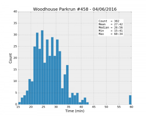 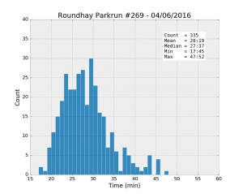 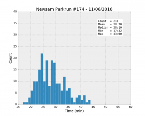 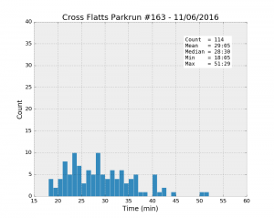 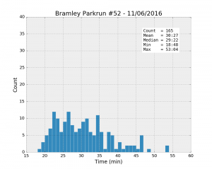 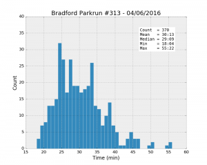
| Parkrun | Runners | Unknown % | Male % | Mean | Std | Min | 25% | Median | 75% | Max |
|---|---|---|---|---|---|---|---|---|---|---|
| Woodhouse #458 04/06/2016 | 421 | 9.3% | 57.6% | 27:42 | 6:33 | 15:41 | 23:20 | 26:56 | 30:39 | 60:34 |
| Roundhay #269 04/06/2016 | 356 | 5.9% | 58.8% | 28:19 | 5:38 | 17:45 | 24:09 | 27:37 | 31:08 | 47:52 |
| Temple Newsam #174 11/06/2016 | 223 | 5.4% | 66.4% | 28:30 | 5:30 | 17:32 | 24:15 | 28:10 | 31:53 | 43:00 |
| Cross Flatts #163 11/06/2016 | 116 | 1.7% | 54.4% | 29:05 | 6:56 | 18:05 | 23:38 | 28:30 | 33:36 | 51:29 |
| Bramley #52 11/06/2016 | 177 | 6.8% | 53.3% | 30:27 | 7:22 | 18:48 | 24:50 | 29:22 | 34:20 | 53:04 |
| Bradford #313 04/06/2016 | 391 | 5.4% | 56.8% | 30:13 | 6:45 | 18:04 | 25:03 | 29:09 | 33:52 | 55:22 |
The table gives a summary of some of the most useful statistics, together with two percentages: the proportion of unknown runners, and the percentage of male runners.
It looks like Woodhouse Moor is much “faster” than the others: the best individual time, and the mean and the median values are the smallest of the lot. Besides, the median is systematically smaller than the mean for all the runs, a clear sign that the distributions are asymmetrical. While most runners achieve a time better than about 33 minutes (look at the 75% percentile values), there is a trail of slower runners whose results bring the average up.
However, comparing mean times between different runs might not be statistically significant if the spread of values is too large. Student’s t-test is there to help. The following table shows the p-values of t-tests for the mean time at Woodhouse Moor compared with each of the other parks.
| Parkrun | p-value |
|---|---|
| Roundhay | 0.181 |
| Temple Newsam | 0.128 |
| Cross Flatts | 0.051 |
| Bramley | 0.000 |
| Bradford | 0.000 |
The test suggests that the results at Roundhay are actually pretty close to the ones at Woodhouse Moor because there is a relatively large (18.1%) probability of observing a difference as large as the one observed even if the two populations were identical. A p-value less than about 5% would be accepted as more significant.
So it is not really clear if Roundhay is more difficult than Woodhouse Moor. Moreover, Roundhay is actually in second position, which is not bad for a hilly course. The type of runners, their age, their degree of fitness could be different in each park. And what about the four other runs, are they “slower” on average because their path is even more difficult? Or is it because their typical runners are also different? To answer these questions, we need to go further into the analysis and take other parameters into consideration.
Age Grade
To assess the “quality” of the runners, there is a useful variable, the Age Grade. This is calculated using the time and the age of the runner. By comparing a runner’s performance with the best performer for a given age, the age grade provides a normalised attribute that will allow us to compare runners with each other on more even terms.
[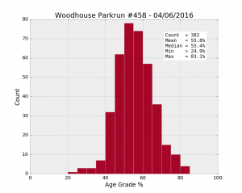] [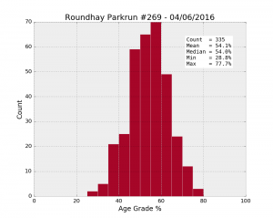] [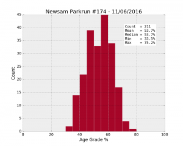][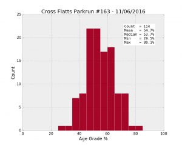] [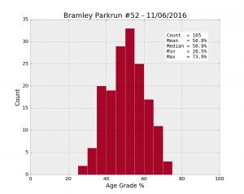][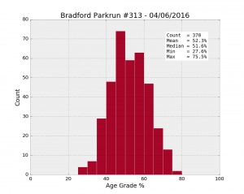]
| Parkrun | Runners | Male % | Mean | Std | Min | 25% | Median | 75% | Max |
|---|---|---|---|---|---|---|---|---|---|
| Woodhouse #458 04/06/2016 | 382 | 57.6% | 55.8 | 9.8 | 24.9 | 49.1 | 55.4 | 62.0 | 83.1 |
| Roundhay #269 04/06/2016 | 335 | 58.8% | 54.1 | 9.3 | 28.8 | 48.3 | 54.0 | 60.5 | 77.7 |
| Temple Newsam #174 11/06/2016 | 211 | 66.4% | 53.7 | 8.9 | 33.5 | 47.3 | 53.7 | 60.8 | 75.2 |
| Cross Flatts #163 11/06/2016 | 114 | 54.4% | 54.7 | 10.1 | 29.5 | 47.4 | 53.7 | 61.6 | 80.1 |
| Bramley #52 11/06/2016 | 165 | 53.3% | 50.8 | 9.9 | 26.5 | 43.8 | 50.8 | 57.7 | 73.9 |
| Bradford #313 04/06/2016 | 370 | 56.8% | 52.3 | 9.9 | 27.6 | 45.4 | 51.6 | 59.1 | 75.5 |
Once again, the age grades are better on average at Woodhouse Moor (55.8%), compared to anywhere else (54.1% at Roundhay). Let’s look at the p-values:
| Parkrun | p-value |
|---|---|
| Roundhay | 0.019 |
| Temple Newsam | 0.011 |
| Cross Flatts | 0.311 |
| Bramley | 0.000 |
| Bradford | 0.000 |
By removing the effect of age and gender in the comparison between the different runs, the age grade has made the statistics much clearer (the p-values are generally smaller). So runners perform better at Woodhouse Moor, whatever their age category or gender. But it could still be due to a different distribution of runners, for example if a lot of well-trained runners prefer to go to Woodhouse Moor rather than Roundhay.
Effect of sampling
The real test to assess the difficulty of a park would be to have exactly the same runners doing each run in a controlled test, ignoring the effect of weather. This is obviously not possible but I tried to simulate the experiment by sampling the results using the same distribution of runners.
The runners are distributed in a non-uniform way across the various age categories, as shown on the following bar plot for Roundhay.
{kind=link}
The test consists first in sampling randomly 5 runners from each category (actually a selection of them because some categories contain fewer than 5 people). The mean age grade is then calculated and saved. This is done 100 times for each park (Roundhay and Woodhouse Moor). The results are shown with these two histograms of calculated means.
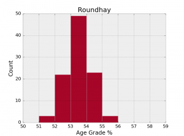 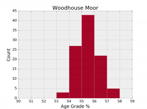
We have now obtained a clearer distinction between the two parks. The overlap between the two histograms is actually misleading because the mean age grade is better at Woodhouse Moor in 96 samples out of 100 (with p-values smaller than 0.1 in 31% of the cases). So, here you go, my impression that Woodhouse Moor is easier on the legs seems to be supported by the statistics!
More could be said about these plots and tables. I will carry on my exploration of the parkrun data in another post. For a start, the same analysis could be repeated for more than one date.
Importing data and making plots with pandas and matplotlib
The analysis and the plots in this post were made in Python, with the help of the pandas and matplotlib libraries. I have written a few functions to read the data and create the plots, they are available in a module simply called parkrun.
As a simple example, here is the way to import a table of weekly results in pandas. First, you need to save the results in a text file. Once you are on your favourite parkrun website looking at the page of results, select and copy everything on the page (ctrl+A and ctrl+C), including the headers and the text at the bottom. Paste the results in a blank text file and save. The function importResults will convert this in a pandas DataFrame.
import parkrun
infile = r'.\\data\\Parkrun\_Woodhouse\_Results\_458\_04062016.txt'
results = parkrun.importResults(infile,report=True)Note: For this to work properly, make sure you copy the page when it is displaying the banner at the top, otherwise the number of lines to skip at the beginning of the file will not match what is hard-coded in the function. But you can in fact modify this behaviour with the skiprows option.
Next, in order to plot the histogram of times, use the time_hist function as follows:
parkrun.time_hist(results,title='Woodhouse Moor',style='ggplot')This creates the following plot (the previous plots were made with the ‘bmh’ style).
{kind=link}
Please see the github repository for more information about the other functions.